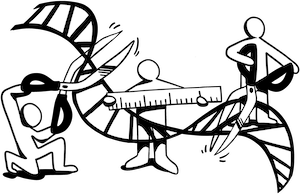

David Lougheed
Research
Graduate Research
-
Genotyping short tandem repeats using long reads (Lougheed et al. 2025 preprint)
Short tandem repeats (STRs) are repetitive regions, composed of a small "motif" (e.g.,
CAG) repeated several times in a row (CAGCAGCAGCAG…) which make up about 5% of the human genome and are implicated in gene expression and disease in humans. Due to their repetitiveness, they can be difficult to genotype with traditional short-read sequencing. As part of my Master's project in Prof. Guillaume Bourque's lab, I wrote a tool called STRkit to genotype these regions using long-read sequencing data, which at the time of writing achieves state-of-the-art performance in key benchmarking metrics.
Side Projects
-
Population structure in rockhole frogs (ongoing)
The Australian rockhole frog (Litoria meiriana) is a species of very small frog endemic to a small portion of northern Australia. Work on this project, primarily occurring at the Lougheed Lab at Queen's University, is examining the fine-grained population genetic structure occurring in this species and testing whether hydrology is implicated.
-
Detecting parental inheritance of human telomere alleles (Zhou et al. 2025 preprint)
Bourque Lab PhD student Yuxin Zhou's research focuses on telomeric inheritance in humans. Telomeres in humans are composed of primarily hexamer repeat units (the canonical repeat unit being
TTAGGG). Telomere variable regions ("TVRs") contain variant repeat units, which form a "barcode" that can be used to trace parent-child telomere inheritance. For this project, I helped construct an algorithm, TeloScore, for scoring similarities between TVR alleles. -
A reference genome for the western chorus frog (Chen et al. 2024 preprint)
I helped Ying Chen (at the time a PhD student at Queen's University, now a Bioinformatics Specialist in the Vertebrate Genome Lab at Rockefeller University) assemble the first reference genome for the western chorus frog (Pseudacris triseriata). In addition to providing a new reference genome for future research, this work uncovered the sex determination system in this frog and identified genes that may be important in anuran evolution.